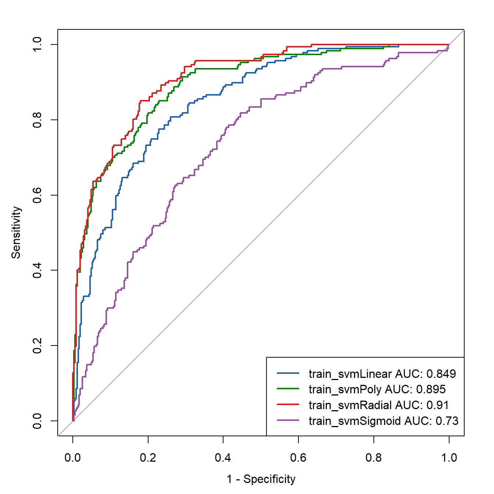

library(e1071)
library(pROC)
library(dplyr)
rm(list = ls())
load(file = "datasets/pimadiabetes.rdata")16 SVM核函数比较
下面给大家演示下R语言做支持向量机的例子，并且比较下在不进行调参的默认情况下，4种核函数的表现情况。分别是：线性核，多项式核，高斯径向基核，sigmoid核。
支持向量机非常强，应用非产广泛，不管是分类还是回归都能用，万金油一样的算法。不过它的理论知识比随机森林复杂了非常多，但是实现起来并不难哈，我们就直接调包即可。
16.1 加载数据和R包
使用e1071包做演示。数据使用印第安人糖尿病数据集。
16.2 数据划分
划分训练集和测试集，经典7：3分：
# 划分是随机的，设置种子数可以让结果复现
set.seed(123)
ind <- sample(1:nrow(pimadiabetes), size = 0.7*nrow(pimadiabetes))
# 训练集、测试集
train <- pimadiabetes[ind,]
test <- pimadiabetes[-ind, ]16.3 训练集建模
e1071使用起来非常简单，直接一个函数搞定，也是使用R语言经典的formula写法，二分类数据我们通常希望获得预测概率，所以加上probability = TRUE
然后kernel参数就是分别用4种核函数。
set.seed(123)
svmLinear <- svm(diabetes ~ ., data = train,
probability = TRUE,
kernel="linear"
)
svmPoly <- svm(diabetes ~ ., data = train,
probability = TRUE,
kernel="polynomial"
)
svmRadial <- svm(diabetes ~ ., data = train,
probability = TRUE,
kernel="radial"
)
svmSigmoid <- svm(diabetes ~., data = train,
probability = TRUE,
kernel="sigmoid"
)接下来就是查看模型在训练集中的表现，我们为了少写几行代码，先定义一个函数，可以自定帮我们提取训练结果，并组成1个数据框，内含原始数据的结果变量，预测结果，预测概率。
# 定义函数
getres <- function(svmfunc, dataset){
data_pred <- predict(svmfunc, newdata=dataset, probability = T)
data_pred_df <- dataset %>% dplyr::select(diabetes) %>%
dplyr::bind_cols(status_pred = data_pred) %>%
dplyr::bind_cols(attr(data_pred, "probabilities"))
}接下来提取数据即可，我们先提取1个看看：
Linear_train_pred_df <- getres(svmLinear, train)
head(Linear_train_pred_df)
## diabetes status_pred neg pos
## 415 neg pos 0.36393796 0.6360620
## 463 pos pos 0.16223183 0.8377682
## 179 pos neg 0.73073668 0.2692633
## 526 pos pos 0.04261936 0.9573806
## 195 pos pos 0.08214236 0.9178576
## 118 pos pos 0.12508113 0.8749189上面这个是：线性核函数，训练集，的结果，看起来没什么问题，第一列是真实结果变量，第2列是预测结果类别，第3和4列是预测的类别概率。
如果你想看看混淆矩阵，可以借助caret包实现：
caret::confusionMatrix(Linear_train_pred_df$diabetes,
Linear_train_pred_df$status_pred,
mode = "everything")
## Confusion Matrix and Statistics
##
## Reference
## Prediction pos neg
## pos 312 38
## neg 82 105
##
## Accuracy : 0.7765
## 95% CI : (0.7389, 0.8111)
## No Information Rate : 0.7337
## P-Value [Acc > NIR] : 0.01292
##
## Kappa : 0.4792
##
## Mcnemar's Test P-Value : 8.661e-05
##
## Sensitivity : 0.7919
## Specificity : 0.7343
## Pos Pred Value : 0.8914
## Neg Pred Value : 0.5615
## Precision : 0.8914
## Recall : 0.7919
## F1 : 0.8387
## Prevalence : 0.7337
## Detection Rate : 0.5810
## Detection Prevalence : 0.6518
## Balanced Accuracy : 0.7631
##
## 'Positive' Class : pos
## 内容非常全面，我们就不解读了。
我们直接把剩下的核函数在训练集、测试集中的结果都提取出来，方便接下来使用。
# 提取4种核函数分别在训练集、测试集的结果
Linear_test_pred_df <- getres(svmLinear, test)
Poly_train_pred_df <- getres(svmPoly, train)
Poly_test_pred_df <- getres(svmPoly, test)
Radial_train_pred_df <- getres(svmRadial, train)
Radial_test_pred_df <- getres(svmRadial, test)
Sigmoid_train_pred_df <- getres(svmSigmoid, train)
Sigmoid_test_pred_df <- getres(svmSigmoid, test)接下来又是大家喜闻乐见的画图环节，就选大家最喜欢的ROC曲线吧。
关于这个ROC曲线，我一共写了十几篇推文，应该是全面覆盖了，大家还不会的去翻历史推文吧。
其实这里你也可以写个函数哈，大神们都说只要重复超过3遍的都建议写函数实现…
# 首先构建训练集中4个ROC对象
roc_train_linear <- roc(Linear_train_pred_df$diabetes,
Linear_train_pred_df$pos,
auc=T
)
## Setting levels: control = pos, case = neg
## Setting direction: controls > cases
roc_train_Poly <- roc(Poly_train_pred_df$diabetes,
Poly_train_pred_df$pos,
auc=T
)
## Setting levels: control = pos, case = neg
## Setting direction: controls > cases
roc_train_Radial <- roc(Radial_train_pred_df$diabetes,
Radial_train_pred_df$pos,
auc=T
)
## Setting levels: control = pos, case = neg
## Setting direction: controls > cases
roc_train_Sigmoid <- roc(Sigmoid_train_pred_df$diabetes,
Sigmoid_train_pred_df$pos,
auc=T
)
## Setting levels: control = pos, case = neg
## Setting direction: controls > cases然后我们准备4种颜色，这种小代码，建议大家记住，因为使用很高频，它可以直接给你十六进制颜色代码，复制粘贴就可以使用了！
RColorBrewer::brewer.pal(4,"Set1")
## [1] "#E41A1C" "#377EB8" "#4DAF4A" "#984EA3"然后就是把训练集中，4种核函数的ROC曲线画在1张图上：
plot.roc(Linear_train_pred_df$diabetes,
Linear_train_pred_df$pos,
col="#1c61b6",legacy=T,lwd=2)
## Setting levels: control = pos, case = neg
## Setting direction: controls > cases
lines.roc(Poly_train_pred_df$diabetes,
Poly_train_pred_df$pos, col="#008600")
## Setting levels: control = pos, case = neg
## Setting direction: controls > cases
lines.roc(Radial_train_pred_df$diabetes,
Radial_train_pred_df$pos, col="#E41A1C")
## Setting levels: control = pos, case = neg
## Setting direction: controls > cases
lines.roc(Sigmoid_train_pred_df$diabetes,
Sigmoid_train_pred_df$pos, col="#984EA3")
## Setting levels: control = pos, case = neg
## Setting direction: controls > cases
legend("bottomright",
legend=c(paste0("train_svmLinear AUC: ",round(roc_train_linear[["auc"]],3)),
paste0("train_svmPoly AUC: ",round(roc_train_Poly[["auc"]],3)),
paste0("train_svmRadial AUC: ",round(roc_train_Radial[["auc"]],3)),
paste0("train_svmSigmoid AUC: ",round(roc_train_Sigmoid[["auc"]],3))
),
col=c("#1c61b6", "#008600","#E41A1C","#984EA3"),
lwd=2)
easy！看着还行。果然是高斯径向基核函数最牛逼，堪称万金油！
16.4 测试集
测试集的数据已经提取好了，直接用即可。还是写个函数吧….
# 构建测试集中4个ROC对象
roc_test <- lapply(list(Linear_test_pred_df,Poly_test_pred_df,
Radial_test_pred_df,Sigmoid_test_pred_df), function(x){
roc_res <- roc(x$diabetes, x$pos,auc=T)
}
)
## Setting levels: control = pos, case = neg
## Setting direction: controls > cases
## Setting levels: control = pos, case = neg
## Setting direction: controls > cases
## Setting levels: control = pos, case = neg
## Setting direction: controls > cases
## Setting levels: control = pos, case = neg
## Setting direction: controls > cases
roc_test[[1]]
##
## Call:
## roc.default(response = x$diabetes, predictor = x$pos, auc = T)
##
## Data: x$pos in 150 controls (x$diabetes pos) > 81 cases (x$diabetes neg).
## Area under the curve: 0.8414然后把测试集中，4种核函数的ROC曲线画在一起：
plot.roc(Linear_test_pred_df$diabetes,
Linear_test_pred_df$pos,
col="#1c61b6",legacy=T)
## Setting levels: control = pos, case = neg
## Setting direction: controls > cases
lines.roc(Poly_test_pred_df$diabetes,
Poly_test_pred_df$pos, col="#008600")
## Setting levels: control = pos, case = neg
## Setting direction: controls > cases
lines.roc(Radial_test_pred_df$diabetes,
Radial_test_pred_df$pos, col="#E41A1C")
## Setting levels: control = pos, case = neg
## Setting direction: controls > cases
lines.roc(Sigmoid_test_pred_df$diabetes,
Sigmoid_test_pred_df$pos, col="#984EA3")
## Setting levels: control = pos, case = neg
## Setting direction: controls > cases
legend("bottomright",
legend=c(paste0("test_svmLinear AUC: ",round(roc_test[[1]][["auc"]],3)),
paste0("test_svmPoly AUC: ",round(roc_test[[2]][["auc"]],3)),
paste0("test_svmRadial AUC: ",round(roc_test[[3]][["auc"]],3)),
paste0("test_svmSigmoid AUC: ",round(roc_test[[4]][["auc"]],3))
),
col=c("#1c61b6", "#008600","#E41A1C","#984EA3"),
lwd=2)
结果看起来还不错哦。